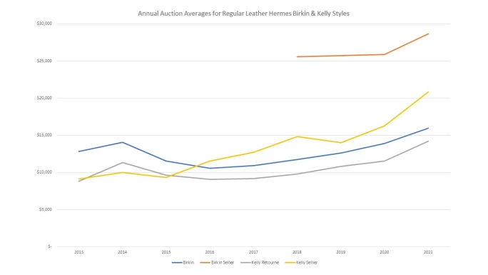
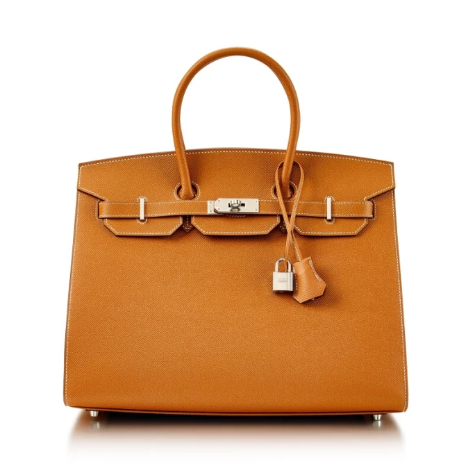
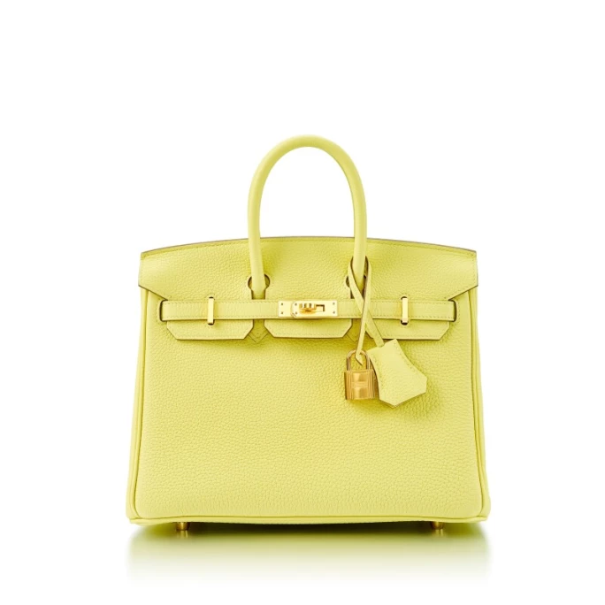
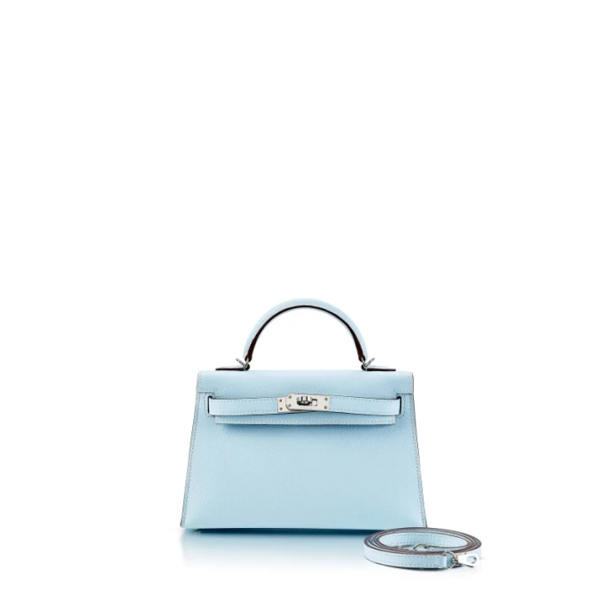
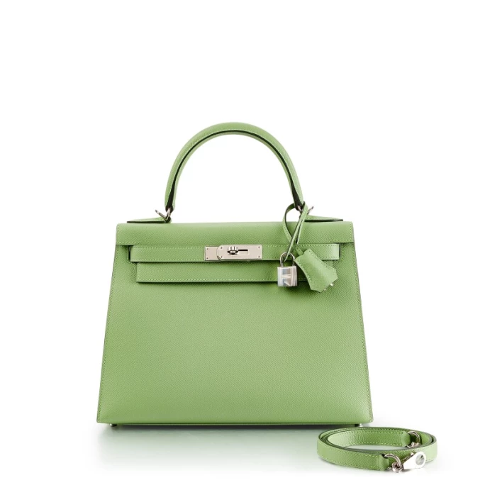
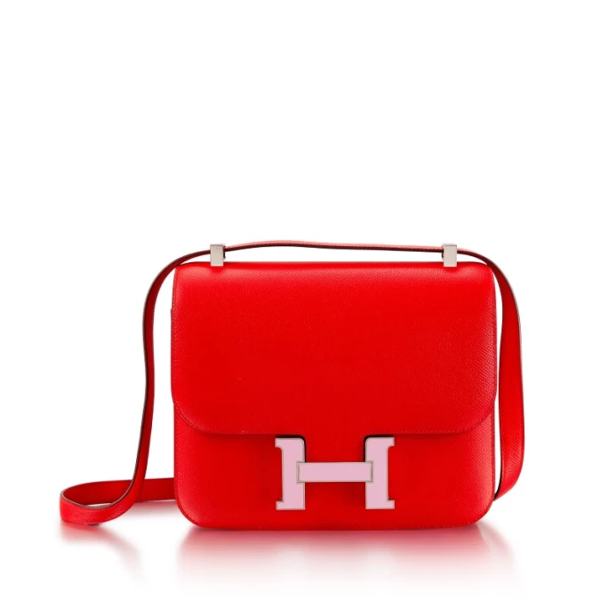

譯自 Vanessa Wat · Sotheby's Hong Kong
愛馬仕柏金包一直都被視為是永不過時、極具代表性的名品，在手袋界的地位首屈一指。大家又是否知道，在 1990 年代至 2000 年代初，凱莉包並不如柏金包流行？事實上，過去數十載，凱莉包在愛馬仕專門店貨源充足，並非一袋難求。然而，它們近年人氣高企，受歡迎程度可與柏金包匹敵。不過，款式並不是影響手袋價值的唯一因素。今天，我們歸納了五大重點，看看它們如何影響愛馬仕手袋的價值。
為了方便大家理解，我們亦整理了過去九年普通皮革柏金包和凱莉包（即未有計算具愛馬仕馬蹄印 HSS 定製或限量版手袋在內）的拍賣結果，顯示兩者平均拍賣價的逐年變化（見下圖）。值得留意的是，手袋的使用狀況最影響手袋價值；但由於狀況好壞可以是主觀的感受，觀感因人而異，因此難以量化和排名。在本文中，我們引用的平均拍賣價是完好如新的手袋和狀況良好的手袋之間的中間點。

柏金包與凱莉包平均拍賣價走勢圖

愛馬仕 金棕色 Epsom 小牛皮35公分 Sellier 外縫柏金包，配鍍鈀金屬件，2020年
1. 內縫與外縫
如剛才所說，柏金包和凱莉包的價值並不總是相等，它們的平均拍賣價每年都會變動。2015 年以前，柏金包的確比凱莉包更值錢，但其後被 Sellier 外縫凱莉包的光芒蓋過。最大原因是因為新款 20 公分迷你凱莉包（Sellier 獨有款式）在每季均創下拍賣紀錄。而 Sellier 外縫柏金包自 2018 年首次出現在拍賣市場起，便一直獨佔鰲頭，平均價格在 2021 年的整個拍賣季持續攀升。Sellier 外縫柏金包有各種尺寸，以 25 公分和 30 公分最為常見。2010 年，它以限量版的形式面世，後來時隔十年才再度發售。因此，與傳統柏金包和凱莉包相比，Sellier 外縫柏金包在拍賣會上甚為少見。在接下來的五至十年，Sellier 外縫柏金包的溢價或會隨其市場供應量的增長而更接近其他款式。

愛馬仕 小雞黃色 Togo 小牛皮25公分柏金包，配鍍金金屬件，2021年
2. 越小越貴重？
手袋價值亦取決於它的大小。正如我們在上一部分提到，20 公分迷你凱莉包二代廣受歡迎，令 Sellier 外縫凱莉包的價值一直居於高位。資料顯示，20 公分的款式在平均拍賣價方面排名第一。目前，25 公分的位居第二，而 28 公分和 30 公分的則並列第三。32 公分和 35 公分的款式在過去數年亦有交易，但它們價值的增長速度較尺寸小的緩慢。意想不到的是，40 公分的款式再度掀起熱潮，在 2021 年的平均價值超過 32 公分和 35 公分的手袋。

愛馬仕 霧藍色Epsom小牛皮20公分迷你凱莉包二代，配鍍鈀金屬件，2021年
3. 皮革反映價格
眾所周知，愛馬仕選用世上最優質的皮革；不過，不同種類的皮革的受歡迎程度有著天壤之別。2016 年，手袋的價值會因皮革種類而相差約 2,000 美元，但到 2021 年，分別以山羊皮和 Clemence 牛皮製成的手袋的平均拍賣價相差近 12,000 美元。當中的主要原因是因為 20 公分凱莉包用的不是 Swift 小牛皮、Togo 小牛皮或 Clemence 牛皮，而是 Epsom 小牛皮或山羊皮。另外，Sellier 外縫柏金包幾乎全以 Epsom 小牛皮、Madame 皮或 Monsieur 皮製成。就如 Novillo 小牛皮和 Jonathan 皮等較新的皮革一樣，以 Madame 皮和 Monsieur 皮製成的手袋的拍賣數量還未足以得出有關其價值的結論。

愛馬仕 草綠色Epsom小牛皮28公分Sellier外縫凱莉包，配鍍鈀金屬件，2021年
4. 與別不同的顏色
至於顏色對手袋價值的影響，亦相當複雜。像 5P 粉紅色這樣的特別色，總有狂熱的支持者；配合特定的尺寸，可以在拍賣中拍得極高價。有些顏色在二手市場的售價普遍低於其他顏色，例如棕色款的平均價值就一直低於其他色調。然而，在過去一年，棕色的平均拍賣價大幅上升，與灰色、藍色和黃色的平均拍賣價拉近距離，略低於綠色、黑色和白色。2021 年，粉紅色手袋的平均價格比排名第二的白色高出 20%。紫色、紅色和橘色手袋目前排在最後三位，橘色排在最後（比紅色低 10%）。橘色是愛馬仕變化最少的類型之一，大多數橘色調的柏金包和凱莉包都是經典橘色，與愛馬仕標誌性的包裝相匹配。

愛馬仕 心紅色及森林紫色 Epsom 小牛皮 24公分 Constance 包，配鍍鈀金屬件，2019年
5. 不可小覷的配件
最後要注意的是配件。大多數的普通皮革柏金包和凱莉包配有鍍金或鍍鈀金屬件，但我們有時也會看到已停產的釕金屬件、香檳金金屬件或淡金色 Permabrass 金屬件。而霧面鍍金或霧面鍍鈀金屬件則基本上為 HSS 定製手袋獨有。Guilloche 是最稀有的配件，有雕刻鑽石圖紋，以鍍金或鍍鈀製成。本文的重點落在最常見的鍍金和鍍鈀金屬件，亦包括了新的鍍玫瑰金金屬件，因為它在普通皮革柏金包和凱莉包上越見普遍。
2016 年前，鍍金和鍍鈀金屬件的價值平分秋色，鍍鈀金屬件略略領先。然而，自 2016 年起，情況逆轉，鍍金金屬件價值變得更高，幾乎每年增長，持續帶頭。2021 年，配鍍金金屬件的手袋平均比配鍍鈀金屬件的手袋貴 2,495 美元，比 2020 年的 1,750 美元之差增長了 42%。
2019 年，鍍玫瑰金金屬件首次出現在拍賣市場，旋即力壓其餘金屬配件。箇中原因主要是因為鍍玫瑰金金屬件在小尺寸手袋上尤其突出。話雖如此，新款 20 公分迷你凱莉包並未配有鍍玫瑰金金屬件。配鍍玫瑰金金屬件的手袋首次亮相時的平均價格為 28,400 美元，其後開始下降，2021 年的平均價格剛超過 23,100 美元（但仍比當年配鍍金金屬件手袋的平均價格 18,250 美元高出 26%）。在未來的拍賣季，鍍金和鍍玫瑰金金屬件的價值或會更相近。